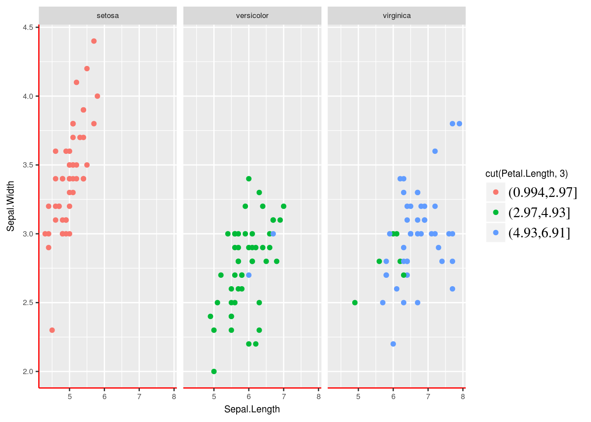

To submit this assignment, upload the full document on blackboard, including the original questions, your code, and the output. Submit both your .Rmd source file and a knitted .html version of the same file.
Recreate a customized plot using what you’ve learned (3.5 marks).
We will use the CO2 dataset studying the cold tolerance on the grass species Echinochloa crus-galli.
# Load the CO2 dataset in base R (there is also a co2 dataset, be careful with capitalization)
CO2 <- datasets::CO2Recreate the plot below using the following specified parameters:
- colors: grey & orange (*Hint:* Use `scale_color_manual`. Check the help docs)
- point size: 3
- point alpha: 0.6
- theme: theme_light
- smoothing method: 'loess' (default)
- smoothing function alpha: 0.2Figure for question 1
library(ggplot2)
# Sample data and plot to use to create your theme
p <- ggplot(iris, aes(x = Sepal.Length, y = Sepal.Width, color = cut(Petal.Length, 3))) +
geom_point() +
facet_grid( ~ Species)
team_theme <- function() {
# Make all your edits here for the theme.
# The code below is an example, change them when creating your theme
theme(axis.line = element_line(color = "red"),
text = element_text(size = 8),
legend.text = element_text(size = 12, family = "serif")) # this is an example
}
p + team_theme()
Once you’ve created the custom theme, decide on a team member that will save this theme to their fork of your team’s GitHub account. Create a new file in the R/ folder called graph_theme.R. Paste the team_theme function code into this file. Commit this file and submit a PR of this change to the main team repo. (0.5 marks)
This work is licensed under a Creative Commons Attribution 4.0 International License. See the licensing page for more details about copyright information.